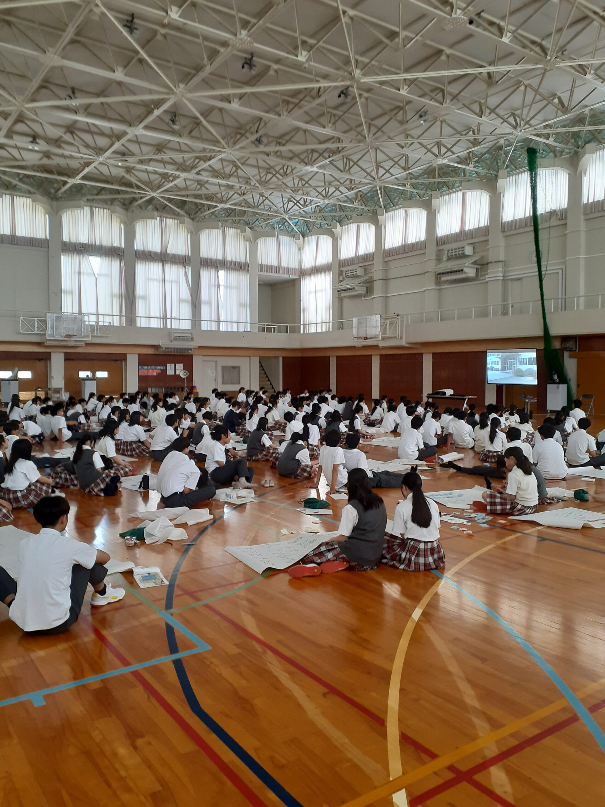
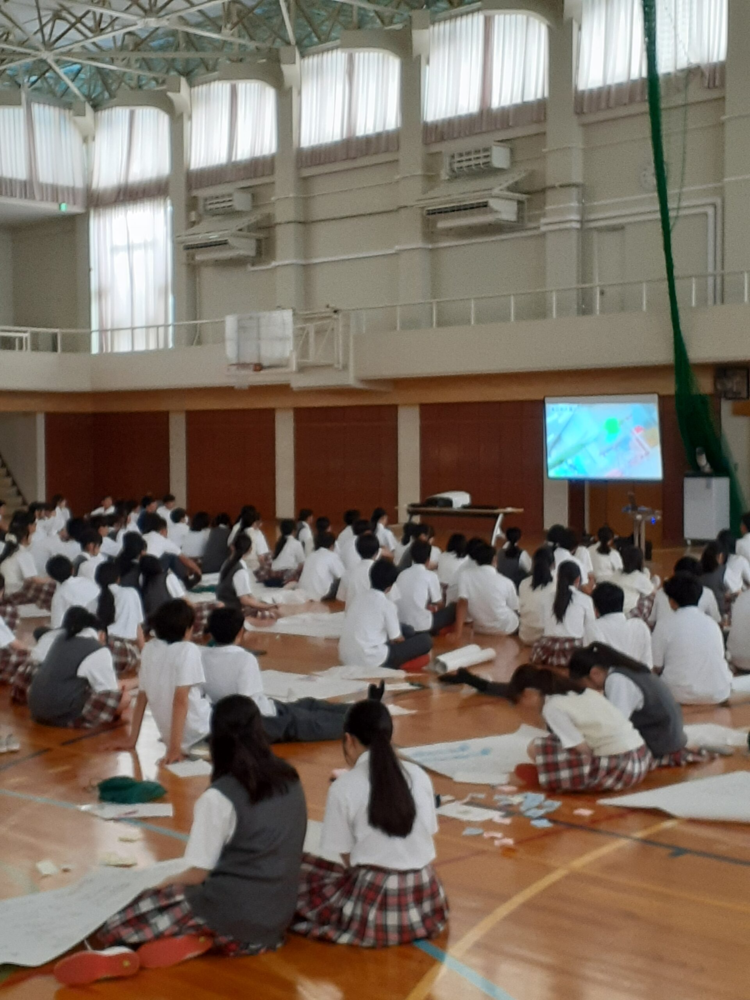
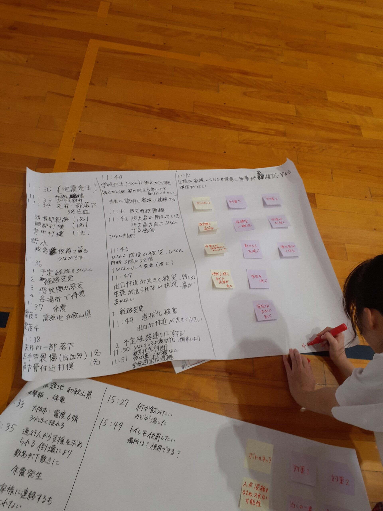
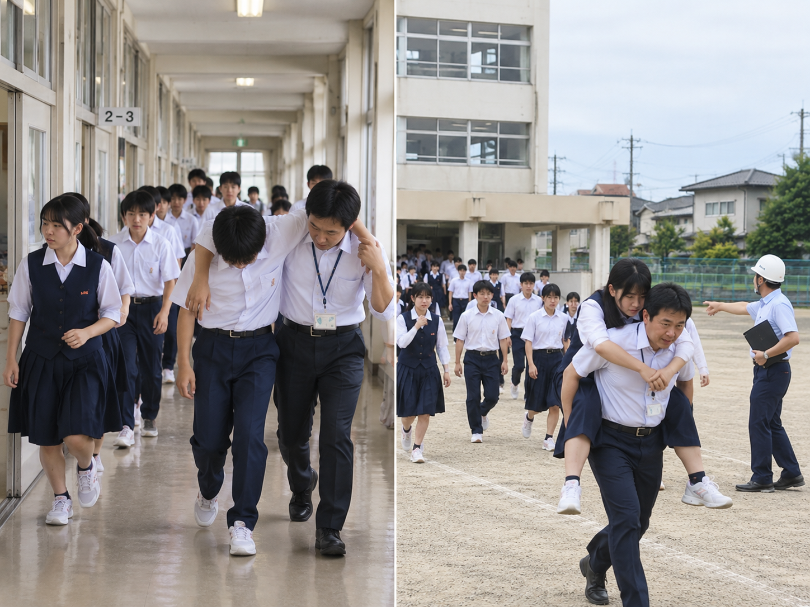

🌱学校で学んだＢＣＰは生涯の財産
学校でＢＣＰを学んだ子どもたちは、その知識とスキルを将来にわたって活かすことができます。
就職先・職場で役立つ
将来、企業・病院・施設などに就職した際、ＢＣＰの考え方を持つ人材として即戦力になれます。
移住先の地域でも活躍
進学・就職で転居した先の地域でも、自主防災活動やＣＣＰ（コミュニティ継続計画）で地域に貢献できます。
地域を支える若者に
地元に残った場合も、防災・ＢＣＰの知識を持つ若い世代が地域の防災力を次世代へ引き継いでいきます。
家庭での防災意識の向上
子どもが学校で学んだことが家庭に持ち帰られ、家族全体の防災意識・準備を高めるきっかけになります。

実際の学校向けＢＣＰ模擬訓練の様子
⚠️学校の防災訓練が抱える課題
訓練が「形式的」になっている
毎年同じ手順で行われる避難訓練は、子どもたちにとって日常の一部となり、緊張感・当事者意識が薄れがちです。
「ＢＣＰ」の視点が欠如している
学校には避難マニュアルはあっても、授業再開・学校機能の継続のための計画（ＢＣＰ）が整備されていないケースが多くあります。
教職員の負担が大きい
防災担当教員だけに任される傾向があり、組織全体での共有・実践体制が構築されていません。
地域連携が不十分
学校の防災は地域の自主防災組織・行政と連携することで初めて機能します。孤立した訓練では限界があります。
📋防災訓練からＢＣＰ訓練へ
ＪＤＲＳが学校現場で実施するのは、単なる避難訓練ではありません。
「もしも学校機能が止まったとき、どう早期再開するか」を子どもたち自身が考え、行動するための本格的なＢＣＰ訓練です。
- 1 当事者意識を育てる 「避難する」だけでなく、「授業・部活・給食・学校行事の継続をどう守るか」を子どもたちが主体的に考えます。自分たちの学校を自分たちで守る意識が芽生えます。
- 2 本物の「模擬訓練」で体験する 机上の学習だけでなく、実際の状況を想定した模擬訓練により、体で覚える実践的な能力が身につきます。緊急時に「考えて動ける力」を養います。
- 3 教職員・保護者・地域と連携 学校単独ではなく、地域の自主防災組織・行政・保護者とともに取り組む体制を構築します。地域全体の防災力向上につながります。
- 4 行政への報告資料としても活用可能 訓練の内容・結果は文書化し、教育委員会や自治体への報告資料として活用できる形で提供します。

グループで取り組む模擬訓練

実践形式のＢＣＰ教育

🏫対象・ご相談先
学校機関への導入は、教育委員会・行政機関からのご依頼・ご相談を承っております。
小学校
中学校
高等学校
特別支援学校
教育委員会
都道府県・市区町村